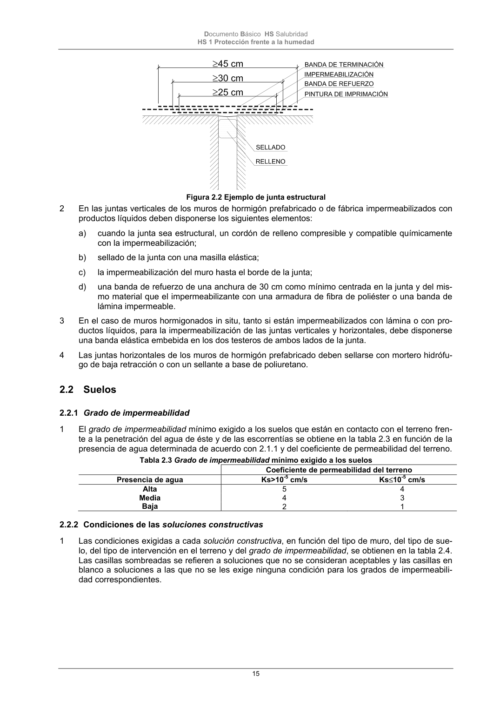

DB-HS Salubridad · edición 2022-06-14 · capa oficial
Documento DB-HS-oficial · SHA-256 del PDF 68df3caacc95f71aee2ec1ba7b2c65ae66155c21e3a8785521b8fdd4fd640d3b
Copia fiel del PDF fuente · Fuente oficial
Ficha de la disposición en la fuente oficial
Formatos: JSON del segmento · Markdown
2.2 Suelos 2.2.1 Grado de impermeabilidad 2.2.1 Grado de impermeabilidad 1 El grado de impermeabilidad mínimo exigido a los suelos que están en contacto con el terreno fren- te a la penetración del agua de éste y de las escorrentías se obtiene en la tabla 2.3 en función de la presencia de agua determinada de acuerdo con 2.1.1 y del coeficiente de permeabilidad del terreno. Tabla 2.3 Grado de impermeabilidad mínimo exigido a los suelos Coeficiente de permeabilidad del terreno Presencia de agua Ks>10-5 cm/s Ks10-5 cm/s Alta 5 4 Media 4 3 Baja 2 1
